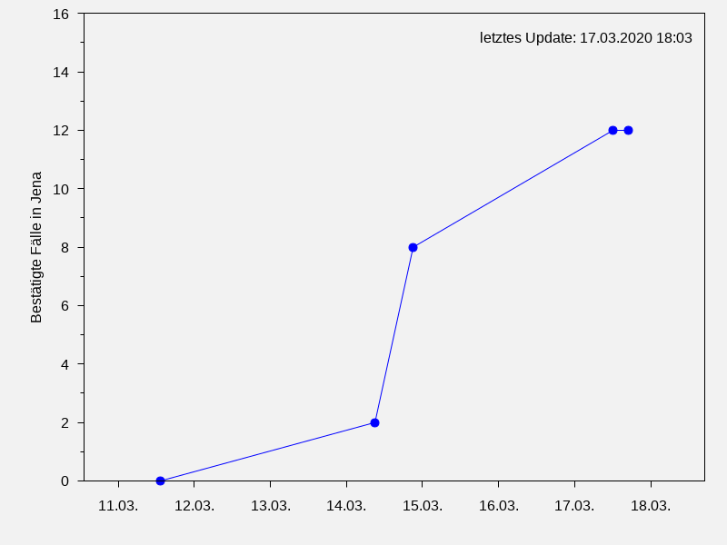

Coronavirus-Fälle in Jena
Quelle: Stadt Jena · tägliche Aktualisierung
")
Coronavirus-Fälle in Weimar
Quelle: Stadt Weimar · tägliche Aktualisierung
Coronavirus-Fälle in Thüringen
Quelle: Thüringer Landesregierung · tägliche Aktualisierung
Coronavirus-Fälle in Thüringen (RKI)
Quelle: Robert Koch-Institut · tägliche Aktualisierung")
")
Autor: Michael Böhme · Abbildungen sind lizensiert unter CC BY-NC-SA · Quellcode auf GitHub